Metal press lab — reviewBOX3D / MATERIAL FORGE / VERIFIED LIVE SCENEMetal press lab.
A configurable specimen, interchangeable tooling, and independent pressure and strike controls. These images show the working 3D simulation.
16 metals · 16 thickness presets · 10 attachments · 20 experiments · 111 checks passed
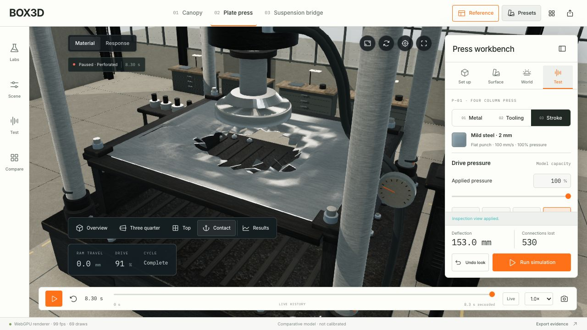
Full pressure fracture · 530 connections lost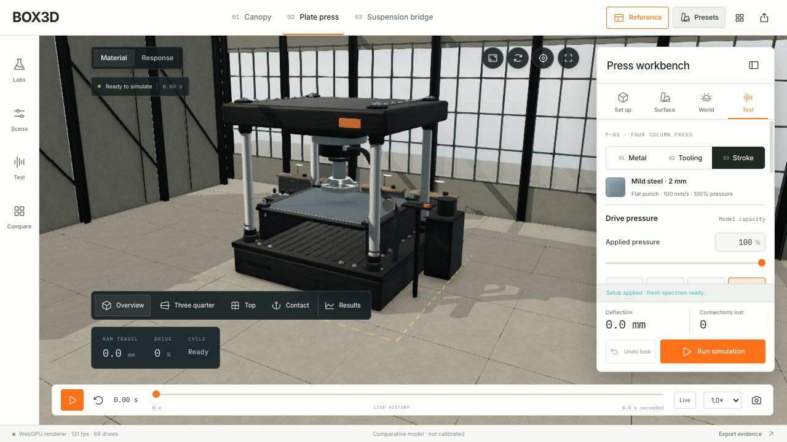
The complete press workbench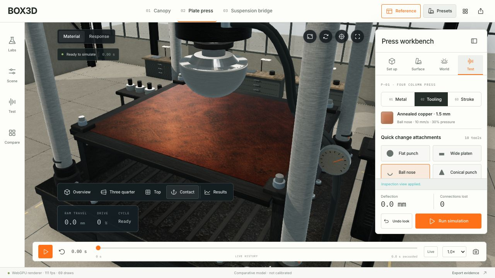
Copper specimen with ball nose20 mm copper plate and adjusted clamps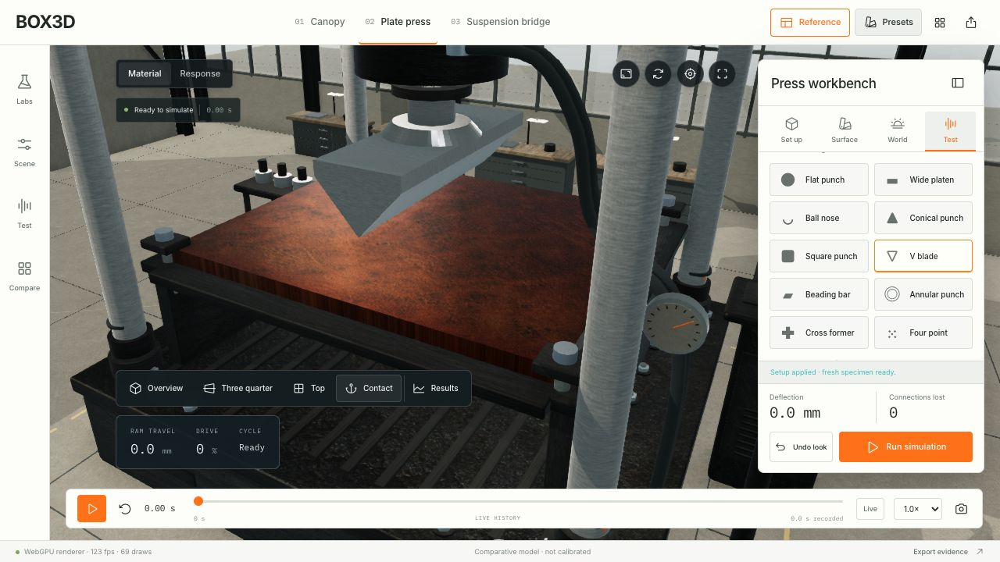
Interchangeable V bladeAnnular punch with an open bore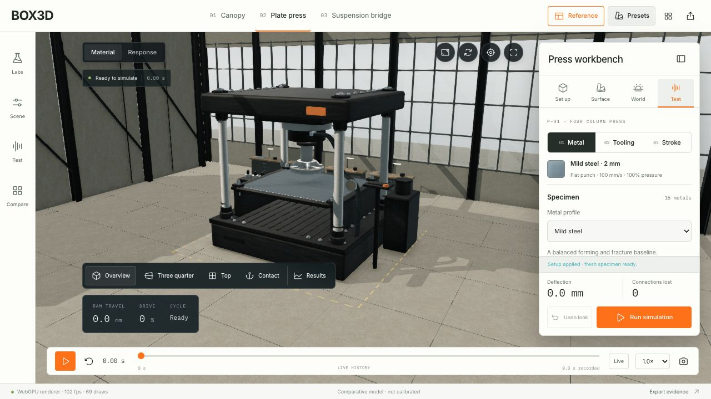
16 selectable metal profiles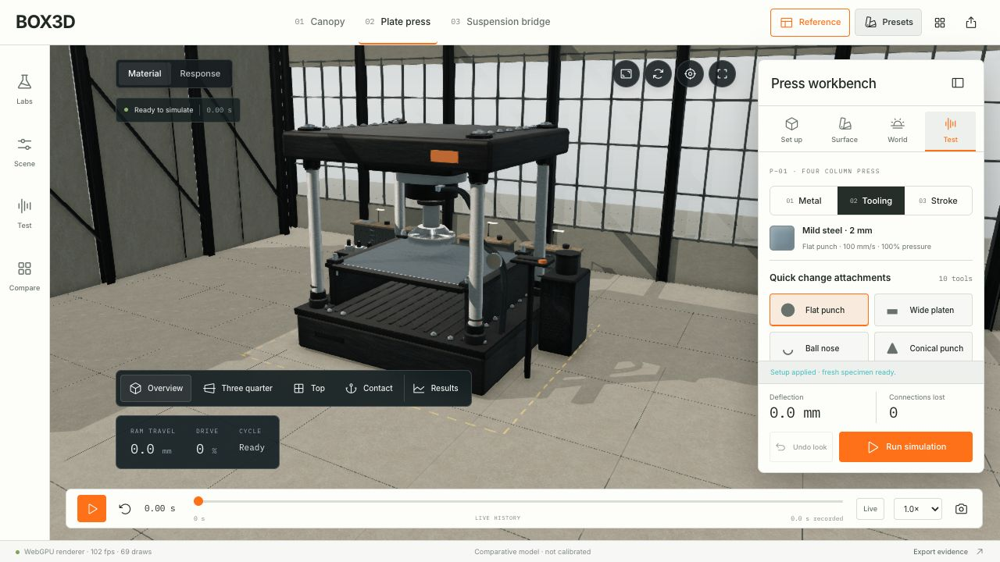
10 contact attachments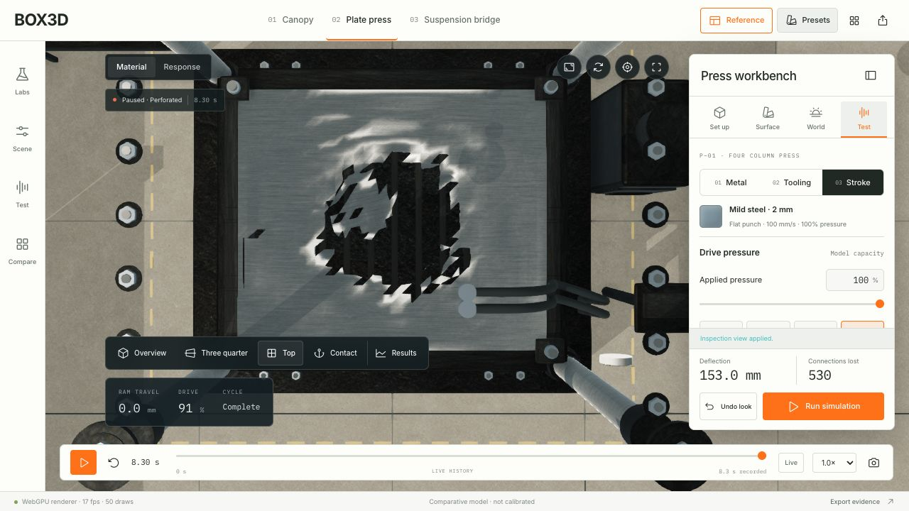
Tooling cutaway reveals the opening Replay restores the intact first frame
Replay restores the intact first frame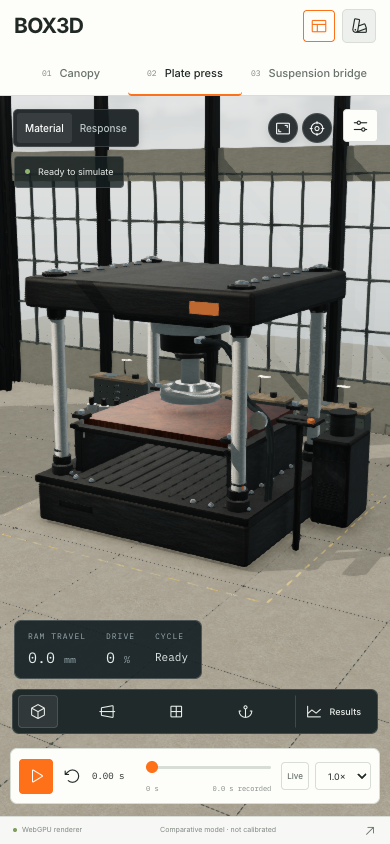
Full press at 390 × 844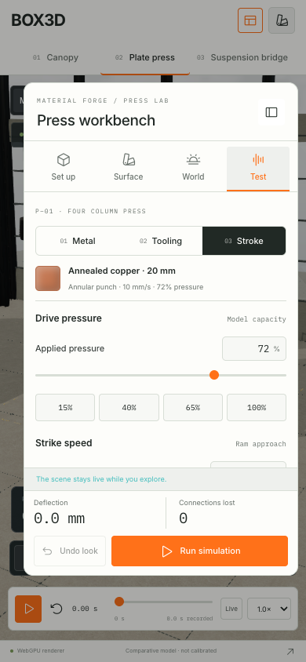
Working phone controls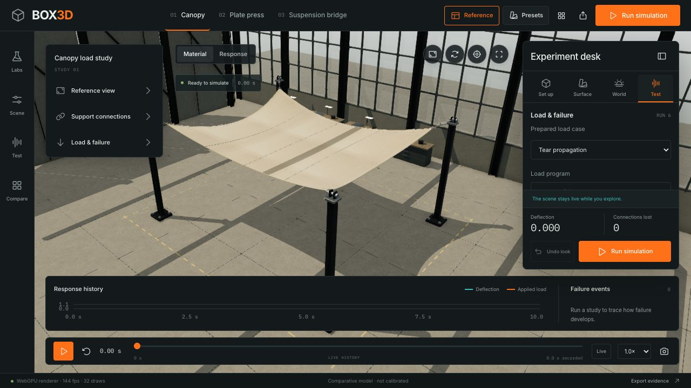
Canopy startup regression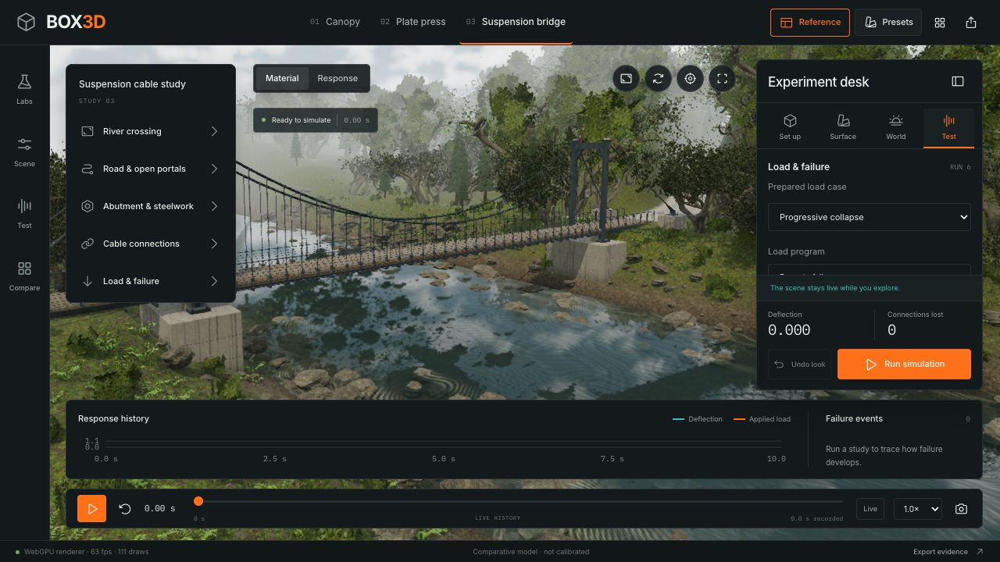
Bridge startup regression